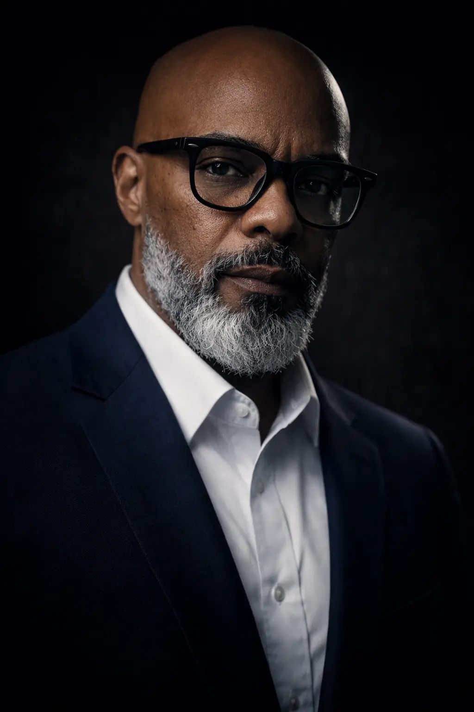
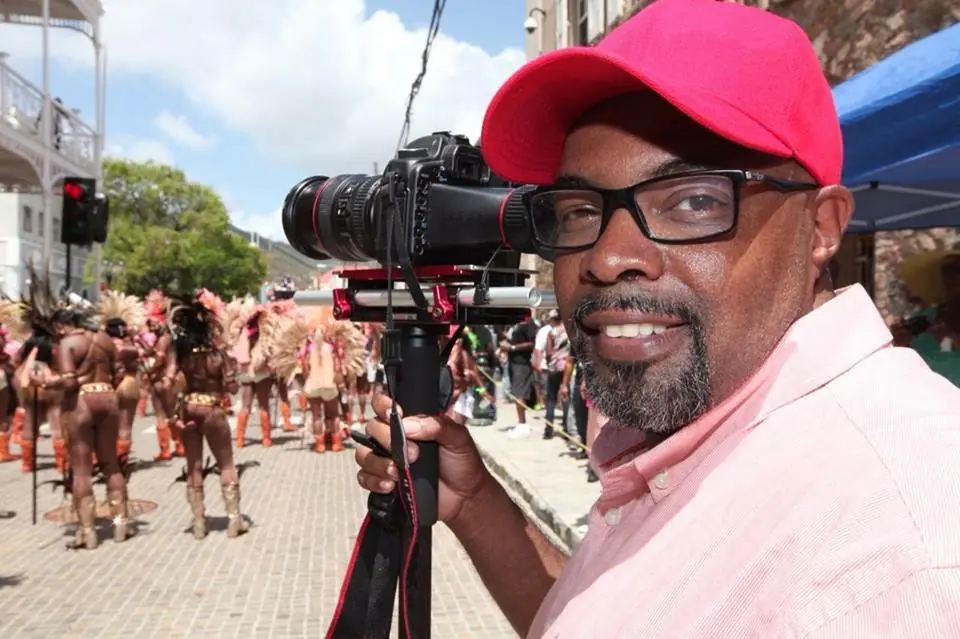
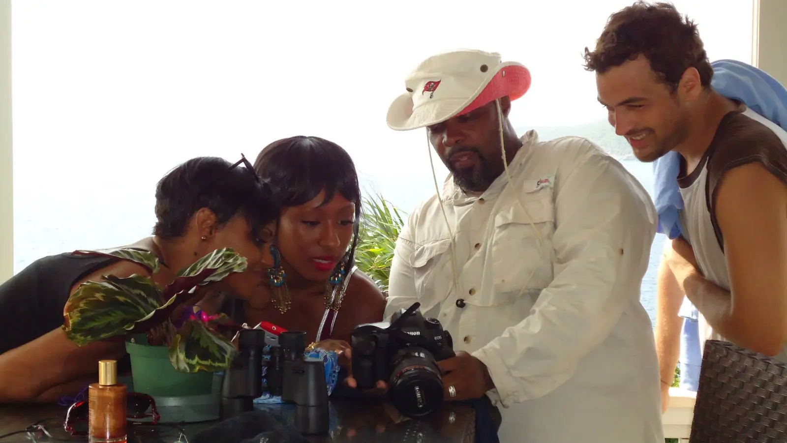
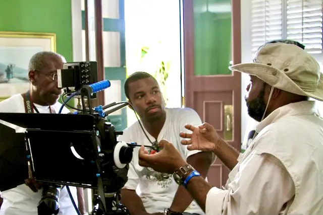

Timeless: A Virgin Islands Love Story
A sweeping romantic drama shaped by the beauty, history and emotional landscape of the U.S. Virgin Islands.
Watch on TubiProducer · Editor · Filmmaker
Rooted in the Caribbean.
Focused on the World.

01 · Selected Work
Selected documentary, branded and narrative work created across the Caribbean, the United States and communities around the world.
A sweeping romantic drama shaped by the beauty, history and emotional landscape of the U.S. Virgin Islands.
Watch on Tubi
Global storytelling centered on people, place and the power of community-led change.
Watch project
A human-centered story of disaster recovery, resilience and hope.
Watch project
Filming Carnival · St. Thomas, USVI
02 · About Edward
St. Thomas · Atlanta · Global
Edward La Borde Jr. is a producer, editor, writer and director whose work spans documentary, branded content, nonprofit storytelling and narrative film.
Raised in St. Thomas and now based in the Atlanta area, Edward brings cultural fluency, visual discipline and emotional clarity to every production. His work helps audiences connect with people, communities and ideas without losing the specificity that makes each story matter.
Download résumé03 · On Set
I bring more than two decades of experience producing, directing and editing documentary, branded and narrative work. Whether working with community members, executives, actors or field crews, my approach is grounded in clear storytelling and thoughtful collaboration.
Creative leadership means making the vision clear—and creating the space for everyone to do their best work.


04 · Experience
End-to-end creative leadership for stories that need both craft and clarity.
Story strategy, treatments, scripts, interview design and production planning.
Documentary, branded, nonprofit and narrative productions with collaborative crews.
Adobe Premiere Pro editing, story shaping, sound design, graphics and finishing.
AI-assisted visual development, preproduction and responsible creative experimentation.
05 · Additional Projects


06 · Start a Conversation
Available for producing, directing, editing, writing and creative collaboration.